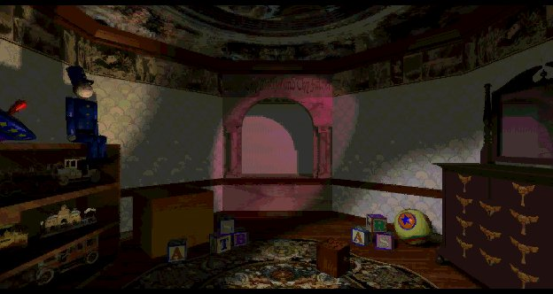
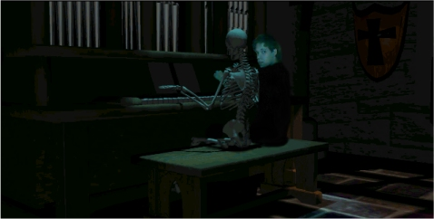

"What is it you want?"
Hello there, this is just a little room. I made a little picture of me playing with myself. Also you can read the colofon here.
Bones and Paul van der Meer (the real-Bones) playing at the organ. You see, it's a picture of me playing with myself. What did you think?
Site by Paul van der Meer
But this site could never exist like it does now if it wasn't for these kind people:
Bas Paap, for helping me with the java-applets and listening to my ramblings about this site.
Daniel Nolan, for having the fan site that made me want to have my own, and for sending the 'making of the seventh guest' videotape.
Brian Larsen, who helped me get in contact with Robert Hirschboeck, and for sending lots of fat man stuff.
Johana, for that beautiful sketch of Stauf.
Scott Clarck, for sending me the midi-collections.
Ang, for her drawings and fan fiction
Maul, for sending me the beta demo of the seventh guest.
Doug Marien, for adding my sites to the official Trilobyte site, and keeping me up to date
about this.
Jess Fernandez, for sending me pictures of the box covers of the seventh guest windows-version.
Amandine, for her interview with Suzy Joachim.
Rob Landeros, Graeme Devine, George Sanger and Robert Stein III for letting me interview them.
Thanks everybody at the Staufmansion-line messageboard.
I'd like to thank everybody who sent me an email and let me know that they appreciate the work. It makes it all worth while. Thanks.